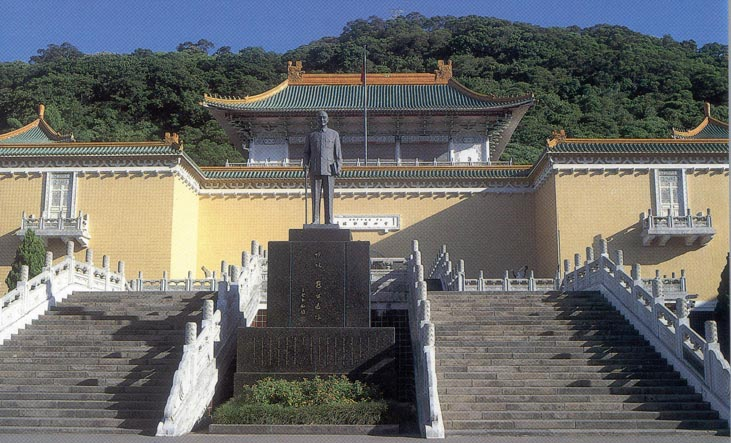

| Rebecca and Mark's Wedding | California Pennsylvania Taiwan |
The Wedding of Rebecca Shen and Mark Fussell (Taiwan) | |
|
 As a third part of their marriage process, Rebecca and Mark went to Taiwan to meet three Chen uncles, one Shen aunt, and to visit with the Chen grandparents. The itinerary for the trip included visiting: Kyoto, Taipei, Tainan, and Shinju. Taiwan and Kyoto PhotosHere are some of the photos from Taiwan and Kyoto. |
|